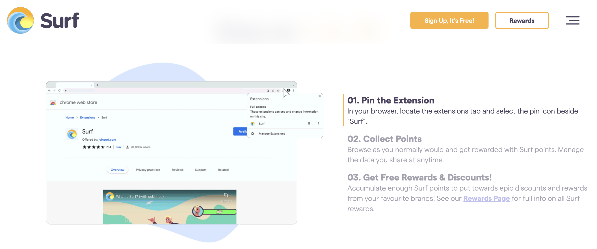
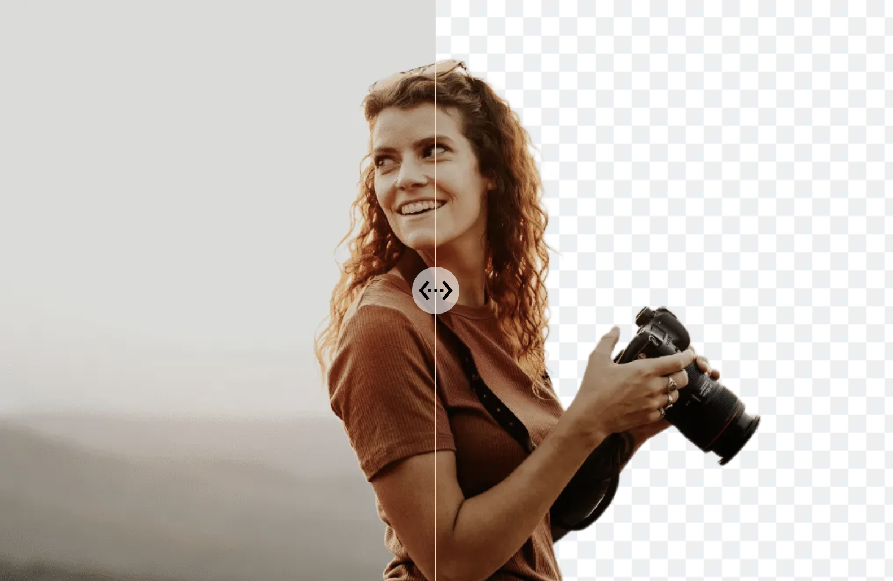
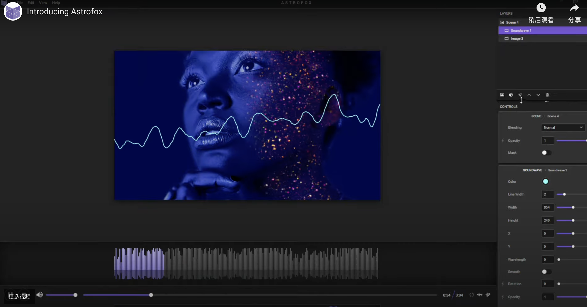
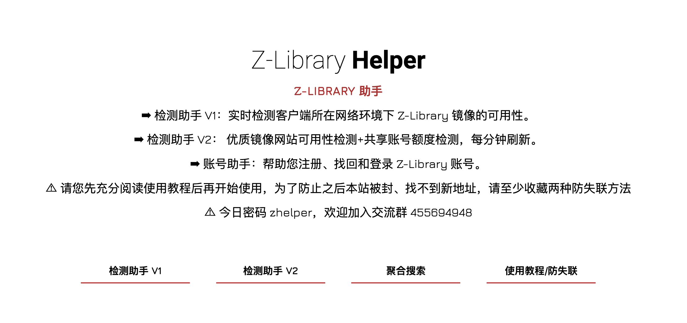
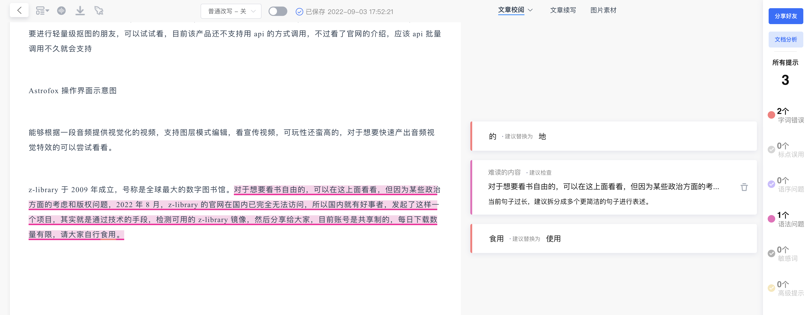

近未来
我的数据值多少钱？

surf 是一家加拿大公司开发的浏览器插件，它希望通过绕过谷歌等公司，直接将用户的浏览行为数据脱敏后出售给品牌方，然后将所得的收益以优惠券和积分的方式返回给用户，你在注册这个插件的时候，无需提供姓名信息，但它需要知道你的年龄、性别和大概地址。
这里面有一个数据归属权的问题，我们上网的浏览行为数据，比如喜欢在哪个页面停留，点击了哪些相关页面，是否有对当前页面进行互动等等，毫无疑问这些数据归属于我们自己，但提供服务的平台方，拿了这些用户的数据去赚钱，比如依赖这些数据进行精准广告推送，但却没有将收益返回给我们，这里面当然一方面是数字归属权的不完善，另外一方面也因为即使用户拿到了相关的数据，依然没办法使用它们。
这家公司的这个方案，显然是起了一个比较好的头，相信未来随着区块链技术的完善，数据资产的归属，将得到更好的发展，比如用户可以分别将自己的某一类数据，分别授权给哪些公司，进行哪些使用，并从中获得小额收益。
新玩意
BgSub 自动抠图工具

一款免费的 AI 自动抠图工具，其最大的特点是，所有处理流程都在本地运行，不会将用户的图片上传到云端，经常需要进行轻量级抠图的朋友，可以试试看，目前该产品还不支持用 api 的方式调用，不过看了官网的介绍，应该 api 批量调用不久就会支持
Astrofox 基于音频生成可视化视觉视频

能够根据一段音频提供视觉化的视频，支持图层模式编辑，看宣传视频，可玩性还蛮高的，对于想要快速产出音频视觉特效的可以尝试看看。
Z-Library 实现电子书自由

z-library 于 2009 年成立，号称是全球最大的数字图书馆。对于想要实现看书自由的童鞋，可以到网站上面看看，但因为某些政治方面的考虑和版权问题，2022 年 8 月，z-library 的官网在国内已完全无法访问，所以国内就有好事者，发起了这样一个项目，其实就是通过技术的手段，检测可用的 z-library 镜像，然后分享给大家，目前账号是共享制的，每日下载数量有限，请大家自行食用。
写作猫

对于单兵作战的文字工作者来说，写稿已然是一件非常劳神费时的事情了，如果还要自己校稿，那简直要了老命了，这款写作猫能够帮助校验文中可能出现的错别字，语法错误等，非常贴心，免费版已提供了每日 10000 字的纠错基础模型，感觉完全够个人使用了。对于想要实现看书自由的童鞋，可以到网站上面看看